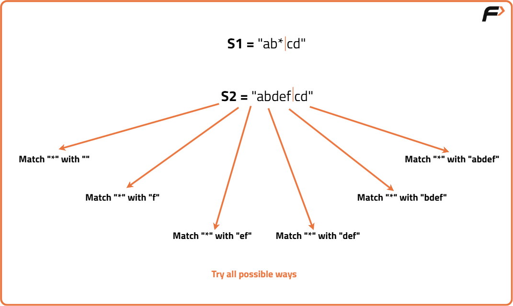
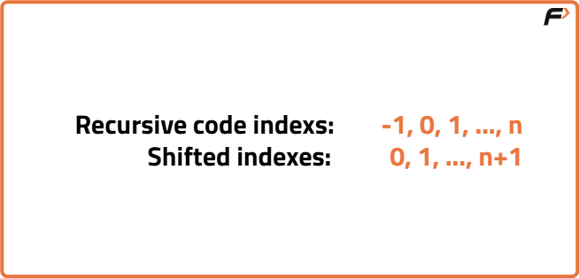

Wildcard Matching | (DP-34)
Problem Statement: We are given two strings ‘S1’ and ‘S2’. String S1 can have the following two special characters.
- ‘?’ can be matched to a single character of S2.
- ‘*’ can be matched to any sequence of characters of S2. (sequence can be of length zero or more).
We need to check whether strings S1 and S2 match or not.
Examples
Input: S1 = "ab*cd", S2 = "abdefcd" Output: true Explanation: "ab" matches "ab", '*' matches "def", "cd" matches "cd". The strings match.
Input: S1 = "*a*b", S2 = "aaab" Output: true Explanation: First '*' matches "aa", 'a' matches 'a', second '*' matches empty string, 'b' matches 'b'. The strings match.
Disclaimer: Here is the practice link to help you assess your knowledge better. It's highly recommend trying to solve it before looking at the solution.
Memoization Approach
Algorithm
- Either the characters match already.
- Or, if there is a ?, we can explicitly match a single character.
- For a *, it can match zero or more characters.
Steps to form the recursive solution
- Compare positions in both strings
Treat one string as the pattern (letters, '?' or '*') and the other as the text. Start from the end and move backwards. - Handle current characters
- Characters match: move back in both strings.
- '?' → matches exactly one character: move back in both.
- '*' →
- Match empty sequence , move back in pattern.
- Match one or more characters,move back in text.
- Different letters: no match.
- Combine results: If any option leads to a match, the strings match.
- Base cases
- Both strings finished : match.
- Pattern finished but text left: no match.
- Text finished but pattern left : match only if all remaining are '*'.
If we draw the recursion tree, we will see that there are overlapping subproblems. In order to convert a recursive solution the following steps will be taken:
- Create a dp array of size [n][m]. The size of S1 and S2 are n and m respectively, so the variable i will always lie between ‘0’ and ‘n-1’ and the variable j between ‘0’ and ‘m-1’.
- We initialize the dp array to -1.
- Whenever we want to find the answer to particular parameters (say f(i,j)), we first check whether the answer is already calculated using the dp array(i.e dp[i][j]!= -1 ). If yes, simply return the value from the dp array.
- If not, then we are finding the answer for the given value for the first time, we will use the recursive relation as usual but before returning from the function, we will set dp[i][j] to the solution we get.

Code
#include <bits/stdc++.h>
using namespace std;
class Solution {
public:
// Function to check if the substring S1[0..i] contains only '*'
bool isAllStars(string &S1, int i) {
// Loop from 0 to i to verify all characters are '*'
for (int j = 0; j <= i; j++) {
if (S1[j] != '*')
return false;
}
return true;
}
// Recursive function with memoization to check wildcard matching
bool wildcardMatchingUtil(string &S1, string &S2, int i, int j, vector<vector<int>> &dp) {
// Base Case 1: Both strings are exhausted
if (i < 0 && j < 0)
return true;
// Base Case 2: Pattern exhausted but text remains
if (i < 0 && j >= 0)
return false;
// Base Case 3: Text exhausted but pattern may still have '*'
if (j < 0 && i >= 0)
return isAllStars(S1, i);
// If already computed, return stored value
if (dp[i][j] != -1)
return dp[i][j];
// If characters match or pattern has '?'
if (S1[i] == S2[j] || S1[i] == '?')
return dp[i][j] = wildcardMatchingUtil(S1, S2, i - 1, j - 1, dp);
// If pattern has '*', we have two choices:
// 1. Treat '*' as matching empty sequence -> move pattern index i-1
// 2. Treat '*' as matching one or more characters -> move text index j-1
if (S1[i] == '*')
return dp[i][j] = wildcardMatchingUtil(S1, S2, i - 1, j, dp) ||
wildcardMatchingUtil(S1, S2, i, j - 1, dp);
// If no match
return dp[i][j] = false;
}
// Main function to be called from driver code
bool wildcardMatching(string &S1, string &S2) {
int n = S1.size();
int m = S2.size();
// DP array initialized to -1 to indicate uncomputed states
vector<vector<int>> dp(n, vector<int>(m, -1));
// Call the recursive utility function starting from the last indices
return wildcardMatchingUtil(S1, S2, n - 1, m - 1, dp);
}
};
// Driver Code
int main() {
// Example pattern and text
string S1 = "ab*cd";
string S2 = "abdefcd";
// Create a Solution object
Solution obj;
// Call the matching function and display the result
if (obj.wildcardMatching(S1, S2))
cout << "String S1 and S2 do match";
else
cout << "String S1 and S2 do not match";
return 0;
}
Complexity Analysis
Time Complexity: O(N*M),There are N*M states therefore at max ‘N*M’ new problems will be solved.
Space Complexity: O(N*M) + O(N+M), We are using a recursion stack space(O(N+M)) and a 2D array ( O(N*M)).
Tabulation Approach
Algorithm
In the recursive logic, we set the base case too if(i<0 ) and if(j<0) but we can’t set the dp array’s index to -1. Therefore a hack for this issue is to shift every index by 1 towards the right.

- First we initialise the dp array of size [n+1][m+1] as zero.
- Next, we set the base condition (keep in mind 1-based indexing), we set the top-left cell as ‘true’, then we set the first column’s value as ‘false’; and for the first row, we will run isAllStars() for every cell value.
- Similarly, we will implement the recursive code by keeping in mind the shifting of indexes, therefore S1[i] will be converted to S1[i-1]. Same for S2.
- At last we will print dp[n][m] as our answer.
Code
#include <bits/stdc++.h>
using namespace std;
class Solution {
public:
// Helper function to check if all first i characters in the pattern are '*'
// This is important for the base case: '*' can match an empty string
bool isAllStars(string &S1, int i) {
// Loop from first character up to i-th character
for (int j = 1; j <= i; j++) {
// If any character is not '*', return false
if (S1[j - 1] != '*')
return false;
}
// All characters were '*', so return true
return true;
}
// Function to perform wildcard pattern matching using tabulation DP
bool wildcardMatching(string &S1, string &S2) {
// n = length of pattern
int n = S1.size();
// m = length of text
int m = S2.size();
// Create a DP table of size (n+1) x (m+1)
// dp[i][j] = true if pattern[0...i-1] matches text[0...j-1]
vector<vector<bool>> dp(n + 1, vector<bool>(m + 1, false));
// Base case: empty pattern matches empty string
dp[0][0] = true;
// Base case: empty pattern cannot match a non-empty string
for (int j = 1; j <= m; j++) {
dp[0][j] = false;
}
// Base case: pattern can match empty string only if it is made of all '*'
for (int i = 1; i <= n; i++) {
dp[i][0] = isAllStars(S1, i);
}
// Fill DP table row by row
for (int i = 1; i <= n; i++) {
for (int j = 1; j <= m; j++) {
// Case 1: Exact match or '?', which matches any single character
if (S1[i - 1] == S2[j - 1] || S1[i - 1] == '?') {
// Take value from the diagonal cell
dp[i][j] = dp[i - 1][j - 1];
}
// Case 2: '*' can match zero or more characters
else if (S1[i - 1] == '*') {
// Match zero characters → take value from above
// Match one or more characters → take value from left
dp[i][j] = dp[i - 1][j] || dp[i][j - 1];
}
// Case 3: No match
else {
dp[i][j] = false;
}
}
}
// Final result is stored in dp[n][m]
return dp[n][m];
}
};
int main() {
// Create an object of Solution class
Solution sol;
// Define the pattern string (S1) and text string (S2)
string S1 = "ab*cd";
string S2 = "abdefcd";
// Call the function and check if pattern matches text
bool result = sol.wildcardMatching(S1, S2);
// Output the result
if (result)
cout << "String S1 and S2 do match";
else
cout << "String S1 and S2 do not match";
return 0;
}
Complexity Analysis
Time Complexity: O(N*M),There are two nested loops
Space Complexity: O(N*M),We are using an external array of size ‘N*M’. Stack Space is eliminated.
Space Optimization Approach
Algorithm
dp[i][j] = dp[i-1][j-1], dp[i][j] = dp[i-1][j] ||dp[i][j-1]
We see that to calculate a value of a cell of the dp array, we need only the previous row values (say prev) and current row’s previous columns values. So, we don’t need to store an entire array. Hence we can space optimise it.- We take two rows ‘prev’ and ‘cur’.
- We initialize it to the base condition. We first initialize the prev row. Its first value needs to be true. Rest all the values of the prev row meeds to be false.
- Moreover, the cur variable whenever declared should have its first cell’s value given by isAllStarts() function.
- Next, we implement the memoization logic. We replace dp[i-1] with prev and dp[i] by cur.
- After every inner loop execution, we set prev=cur, for the next iteration.
- At last, we return prev[m] as our answer.
Code
#include <bits/stdc++.h>
using namespace std;
// Class containing the logic for wildcard pattern matching
class Solution {
public:
// Function to check if all characters in the substring of S1 (up to index i) are '*'
bool isAllStars(string &S1, int i) {
// Loop through each character from index 0 to i-1
for (int j = 1; j <= i; j++) {
// If any character is not '*', return false
if (S1[j - 1] != '*')
return false;
}
// If loop finishes, it means all characters were '*'
return true;
}
// Function to perform wildcard pattern matching between S1 (pattern) and S2 (text)
bool wildcardMatching(string &S1, string &S2) {
// Store lengths of both strings
int n = S1.size();
int m = S2.size();
// Create two boolean arrays to store the matching results of the previous and current rows
vector<bool> prev(m + 1, false);
vector<bool> cur(m + 1, false);
// Empty pattern matches with empty string
prev[0] = true;
// Iterate through pattern characters
for (int i = 1; i <= n; i++) {
// For the first column, check if the pattern till i-th character is all '*'
cur[0] = isAllStars(S1, i);
// Iterate through text characters
for (int j = 1; j <= m; j++) {
// If characters match or pattern has '?', take diagonal value from DP table
if (S1[i - 1] == S2[j - 1] || S1[i - 1] == '?') {
cur[j] = prev[j - 1];
}
// If pattern has '*', it can represent empty sequence or any character
else if (S1[i - 1] == '*') {
cur[j] = prev[j] || cur[j - 1];
}
// If characters don't match and no wildcard present
else {
cur[j] = false;
}
}
// Move current row to previous row for next iteration
prev = cur;
}
// Final answer is whether the whole pattern matches the whole text
return prev[m];
}
};
// Driver code
int main() {
// Create object of Solution class
Solution obj;
// Example pattern with wildcard characters
string S1 = "ab*cd";
// Example text to match
string S2 = "abdefcd";
// Call the wildcardMatching function
bool result = obj.wildcardMatching(S1, S2);
// Print the result based on matching outcome
if (result)
cout << "String S1 and S2 do match";
else
cout << "String S1 and S2 do not match";
return 0;
}
Complexity Analysis
Time Complexity: O(N*M),There are two nested loops.
Space Complexity: O(M),We are using an external array of size ‘M+1’ to store two rows.